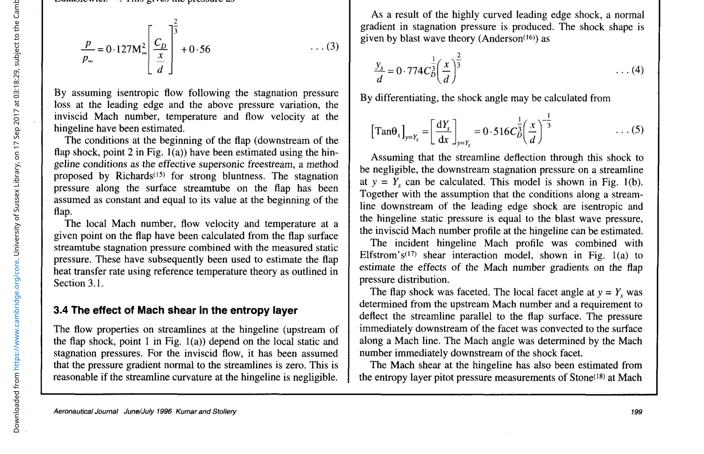
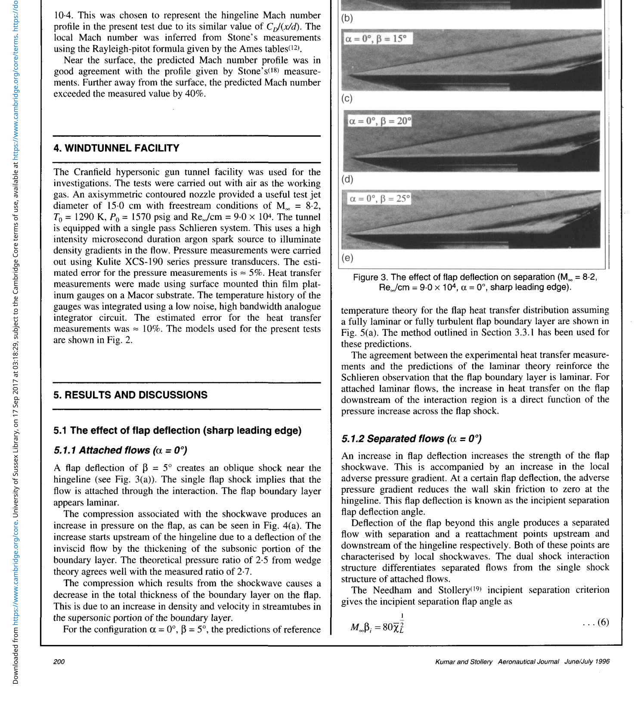
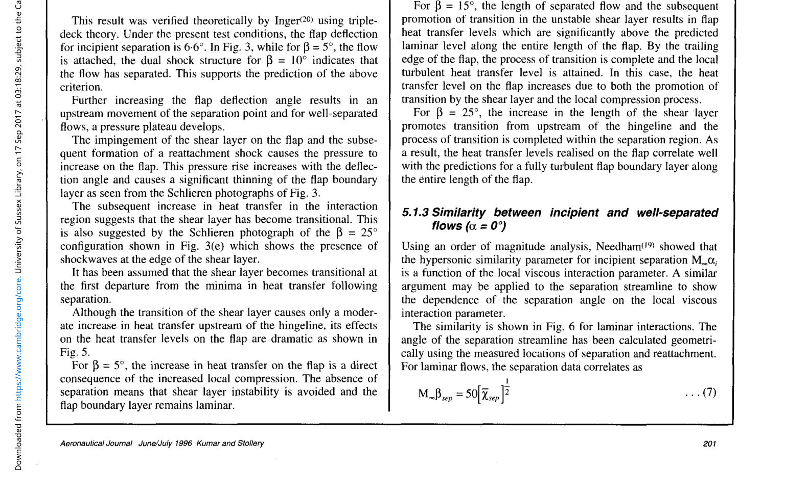
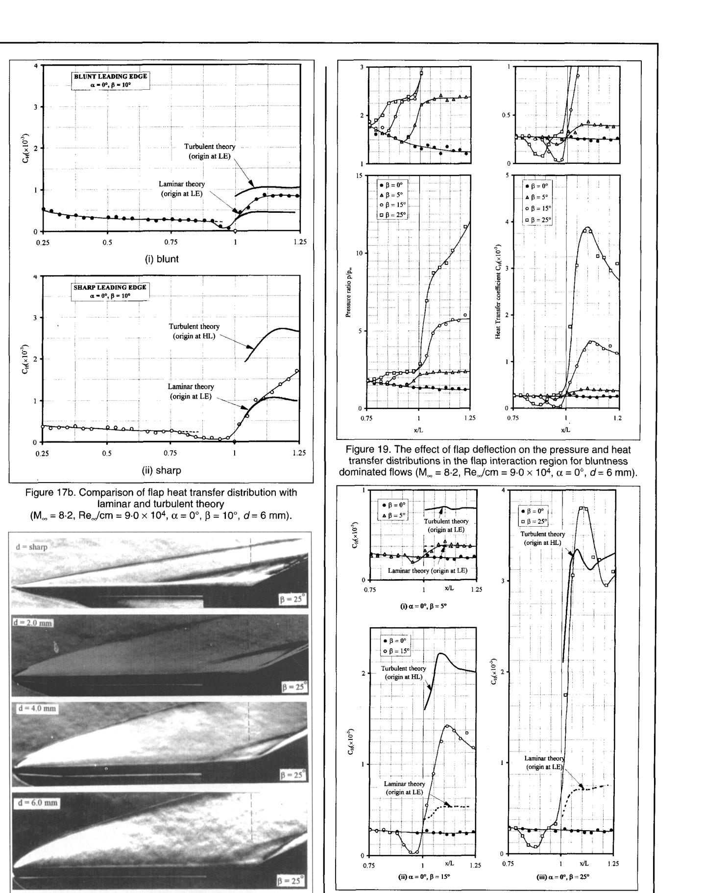

01中文摘要
实验研究襟翼偏转、构型攻角和前缘钝度对边界层分离与转捩的影响。采用准二维平板和全展长后缘控制襟翼，在 M=8.2、Re/cm=9.0×10⁴ 的高超声速炮风洞中试验，襟翼偏转 0°–30°，攻角 0°–10°（正攻角为低头），用半圆柱前缘模拟钝化。通过高速纹影、表面压力和热流测量研究流态，并用液晶显示三维性；同时建立估算尖前缘与钝前缘襟翼压力和热流水平的解析方法，与实验对比。
02阅读说明
期刊论文（The Aeronautical Journal, 1996年6/7月，共12页）；材料为 OCR 全文、16 幅抓图与图注。实验条件、图注与结论可读性较好，但正文双栏 OCR 交错严重，式(1)、(3)、(9)的符号与分式层次残缺；已对照原 PDF 第2-7页图像核对（共6页，未超限），并用式(1)所给常数 A=0.332、s=Pr^(2/3)、n=0.5 的量纲关系校对。仍有少数符号受限于材料，已在相应位置注明。 文章类型：期刊
03一句话核心与三句话摘要
在 M∞=8.2 炮风洞中实验并建模研究襟翼偏转、迎角与前缘钝度对高超声速控制面分离、转捩及压力/热流的影响。
- 在 Cranfield 高超声速炮风洞（M∞=8.2、Re/cm=9.0×10^4、T0=1290 K）中测量平板-襟翼模型的压力与热流，β=0-30°、α=0-10°、前缘钝度 d=0-6 mm。 原文明确
- 结果表明襟翼偏转同时促进分离与转捩，迎角促进转捩但延迟分离，较大钝度显著延迟分离并降低襟翼压力恢复与热流。 AI概括
- 作者用参考温度理论、Lukasiewicz 爆炸波、Anderson 激波形状、Richards 强钝度方法与 Elfstrom 剪切模型估算襟翼压力与热流，压力误差约 5%、热流误差约 10%。 原文明确
04核心内容清单
| 要点 | 类型 | 重要性 | 原文依据 | 属性 |
|---|---|---|---|---|
| 实验覆盖 M∞=8.2、Re∞/cm=9.0×10^4、T0=1290 K、P0=1570 psig，β=0-30°、α=0-10°，锐前缘及 d=0.2/0.4/0.6 cm 半圆柱钝前缘。 | 实验条件 | A | PDF 第1页（印刷页197）；PDF 第4页（印刷页200）；图2 | 原文明确 |
| β=5° 为附着流，单道襟翼斜激波；实测压比 2.7 与楔理论 2.5 相符，襟翼热流符合层流参考温度理论。 | 实验结果 | A | PDF 第4-5页（印刷页200-201），图3a、图4a、图5a | 原文明确 |
| 起始分离襟翼偏角为 β_i=6.6°；β=10° 出现分离/再附双激波结构，证明流动已分离。 | 实验结果 | A | PDF 第4-5页（印刷页200-201），式(6)、图3b | 原文明确 |
| β=15° 时分离区加长并在襟翼后缘前完成转捩；β=25° 时转捩在分离区内完成，襟翼热流符合全湍流预测。 | 实验结果 | A | PDF 第5页（印刷页201），图4、图5 | 原文明确 |
| 层流分离流满足 M∞β_sep=50χ_sep^(1/2)，与起始分离判据 M∞β_i=80χ_L^(1/2) 服从相同标度；Inger 三阶理论支持该相似性。 | 关联/理论 | A | PDF 第5页（印刷页201），式(6)-(7)、图6 | 原文明确 |
| 迎角由0°增至5°使 β=10° 的分离延迟；α=10° 时平板转捩提前到 x/L≈0.6（α=5° 为 x/L=1.05），分离区进一步缩短。 | 实验结果 | A | PDF 第5-7页（印刷页201-203），图8、图11、图12 | 原文明确 |
| d=4.0/6.0 mm 的钝前缘在 β=10° 时完全抑制分离，呈单道襟翼激波与附着流；锐前缘则为完全分离。 | 实验结果 | A | PDF 第10-11页（印刷页206-207），图16、图17 | 原文明确 |
| β=25° 时钝度逐步延迟分离，并显著降低襟翼压力与热流；钝度仍促进襟翼边界层转捩。 | 实验结果 | A | PDF 第10-11页（印刷页206-207），图18、图19、图20 | 原文明确 |
| 参考温度理论+爆炸波+熵层 Mach 剪切模型对附着流给出压力约5%、热流约10%的精度，但不能预测分离区热流分布。 | 模型验证 | B | PDF 第2-4页（印刷页198-200）；PDF 第10页（印刷页206） | 原文明确 |
| Stone 皮托压力导出的熵层 Mach 数剖面在近壁与预测吻合，远离壁面处预测值高 40%。 | 模型验证 | B | PDF 第3-4页（印刷页199-200） | 原文明确 |
| 液晶显示钝构型存在周期性展向热流条纹，作者归因于 Taylor-Gortler 涡，并将其作为钝度促进转捩的机制之一。 | 机制 | B | PDF 第10页（印刷页206） | 原文明确 |
| 大钝度降低铰链线下游压力恢复，导致控制有效性显著损失；这是工程上必须与热流收益一并权衡的代价。 | 结论 | B | PDF 第12页（印刷页208），结论 | 原文明确 |
05引言：研究问题与领域缺口
高超声速飞行器为缓解前缘热流必须采用钝前缘，同时又要覆盖较宽迎角范围，这两类几何变化都会改变控制面的有效性（PDF 第1页，印刷页197）。钝前缘产生脱体弓形激波和熵层，使当地 Mach 数与单位 Reynolds 数沿流向和法向形成梯度；小钝度通常促进转捩和分离，大钝度则延迟分离，但已有结论多来自不同 Mach 数、不同模型，缺乏 M∞=8.2 下同时覆盖襟翼偏转、迎角与钝度的系统数据（PDF 第2页，印刷页198）。本文目标是：实验测量这三类参数对边界层分离与转捩的影响，并建立可估算锐/钝构型襟翼压力与热流的解析模型。
06流动条件与几何构型
| 项目 | 数值/描述 | 依据 | 备注 |
|---|---|---|---|
| 试验设备 | Cranfield 高超声速炮风洞；轴对称型面喷管，有效试验射流直径 150 cm（原文如此） | PDF 第4页（印刷页200） | |
| 工质 | 空气 | PDF 第4页（印刷页200） | |
| 来流 Mach 数 M∞ | 8.2 | PDF 第1页、第4页（印刷页197、200） | |
| 总温 T0 | 1290 K | PDF 第4页（印刷页200） | |
| 总压 P0 | 1570 psig | PDF 第4页（印刷页200） | |
| 单位 Reynolds 数 Re∞/cm | 9.0×10^4 | PDF 第1页、第4页（印刷页197、200） | |
| 襟翼偏角 β | 0°≤|β|≤30° | PDF 第1页（印刷页197） | |
| 迎角 α | 0-10°（正 α 为低头） | PDF 第1页（印刷页197） | |
| 前缘钝度 | 锐前缘 d=0.0025 cm；半圆柱钝前缘 d=0.2、0.4、0.6 cm（即 2、4、6 mm） | 图2；PDF 第4页（印刷页200） | |
| 模型 | 准二维平板+全展长后缘襟翼，展弦比 0.65；模型尺寸见 Fig. 2（单位 cm） | 图2；PDF 第4页（印刷页200） | |
| 测量手段与误差 | 单程氩火花 Schlieren（微秒级）；Kulite XCS-190 压力传感器，误差约5%；Macor 基底薄膜铂热流计，误差约10%；液晶表面流动显示 | PDF 第4页（印刷页200）；PDF 第10页（印刷页206） | |
| 起始分离角与压比 | β_i=6.6°；β=5° 时实测压比 2.7，楔理论 2.5 | PDF 第4-5页（印刷页200-201） | |
| 平板转捩位置 | α=5° 时 x/L=1.05；α=10° 时约 x/L=0.6 | PDF 第6页（印刷页202），图8 |
07核心现象与关键参数
| 参数 | 定义 | 数值 | 关系/说明 | 依据 |
|---|---|---|---|---|
| C_H | 热流系数 q/[ρ∞U∞cp(T0-Tw)] | 式(1)左端被关联量 | C_H Re_(∞x)^s = (A/s)·物性比修正·(T_r-T_w)/(T_0-T_w) | PDF 第2页（印刷页198），式(1)；PDF 第1页（印刷页197）符号表 |
| A、s、n（式1常数） | 参考温度热流关联的系数、Reynolds 幂次与物性比指数 | 层流 A=0.332、s=Pr^(2/3)、n=0.5；湍流 A=0.0296、s=1、n=0.2 | 见式(1) | PDF 第2页（印刷页198） |
| T* | Eckert 参考温度 | T* = T_e + 0.5(T_w-T_e) + 0.22r(γ-1)/2·M_e^2·T_e | 式(2)；恢复因子 r=Pr^(1/2) | PDF 第2页（印刷页198），式(2) |
| χ | 黏性干扰参数 | M∞^3√(C/Re_x)，C 为 Chapman-Rubesin 常数 | 起始分离与分离流相似律的自变量 | PDF 第1页（印刷页197）符号表 |
| χ/K_e^(1/3) | 钝度-黏性干扰参数 | 用于关联钝前缘对分离区长度的影响 | Holden 结果表明 χ/K_e^(1/3)<0.1 时钝度大幅减小分离，0.1-0.5 时促进分离 | PDF 第2页（印刷页198） |
| β_i | 起始分离襟翼偏角 | 6.6°（本文条件） | M∞β_i=80χ_L^(1/2) | PDF 第4-5页（印刷页200-201），式(6) |
| β_sep | 分离流线偏角，由实测分离点与再附点几何关系求得 | 层流数据满足 M∞β_sep=50χ_sep^(1/2) | 式(7) | PDF 第5页（印刷页201），式(7)、图6 |
| p_p/p_1 | 襟翼平台压力与平板压力之比 | 分离长度关联的主要自变量 | L_sep 随 p_p/p_1 增大而增大（式9） | PDF 第7页（印刷页203），式(9) |
| L_sep | 分离区长度（分离点到再附点） | 随 β 增大、随迎角增大而缩短；钝度使其缩短 | 由式(9)与 δ*_0、p_p/p_1 联系 | PDF 第5-7页（印刷页201-203） |
| δ*_0 | 干扰区起始处的边界层位移厚度 | 式(9)的长度尺度 | L_sep/δ*_0 与 p_p/p_1 关联 | PDF 第7页（印刷页203） |
| 实测压比 | β=5° 时襟翼压力与平板压力之比 | 实测 2.7；楔理论 2.5 | 用于验证附着流单激波模型 | PDF 第4页（印刷页200） |
| 测量误差 | 压力与热流测量的估计误差 | 压力约5%；热流约10% | 用于评价理论-实验吻合程度 | PDF 第4页（印刷页200） |
| 熵层 Mach 数预测偏差 | 基于 Stone 皮托压力推算的熵层 Mach 数剖面与预测剖面的偏差 | 近壁吻合；远离壁面处预测值高 40% | 影响襟翼压力预测的输入 | PDF 第3-4页（印刷页199-200） |
08方法与数据
试验在 Cranfield 高超声速炮风洞进行，工质为空气，轴对称型面喷管，来流 M∞=8.2、T0=1290 K、P0=1570 psig、Re∞/cm=9.0×10^4（PDF 第4页，印刷页200）。模型为准二维平板加全展长后缘襟翼，展弦比 0.65；锐前缘 d=0.0025 cm，半圆柱钝前缘 d=0.2/0.4/0.6 cm（图2）。测量包括单程氩火花 Schlieren（微秒级曝光）、Kulite XCS-190 压力传感器（误差约5%）、Macor 基底薄膜铂热流计（误差约10%）以及液晶表面流动显示（PDF 第4页、第10页）。理论部分：以参考温度理论（式1-2）由实测压力分布反算襟翼热流；用 Lukasiewicz 爆炸波压力、Anderson 激波形状与激波角（式3-5）描述钝前缘流场；用 Richards 强钝度法与 Elfstrom 剪切相互作用模型把熵层 Mach 数梯度传到襟翼；用 Needham-Stollery 判据（式6）与分离流相似律（式7）分析分离；并用 Inger 三阶理论旁证相似性（PDF 第2-7页）。计算时附着层流与分离层流以前缘为虚拟原点，湍流以铰链线为虚拟原点（PDF 第2页）。
| 项目 | 内容 | 依据 | 备注 |
|---|---|---|---|
| 风洞实验 | Cranfield 高超声速炮风洞，空气工质，轴对称型面喷管，M∞=8.2、T0=1290 K、P0=1570 psig、Re/cm=9.0×10^4 | PDF 第4页（印刷页200） | |
| 流场显示 | 单程氩火花 Schlieren，微秒级曝光，用于识别单激波/双激波、分离与转捩 | PDF 第4页（印刷页200）；图3、图9、图11、图14、图16、图18 | |
| 压力测量 | Kulite XCS-190 系列传感器，估计误差约5% | PDF 第4页（印刷页200） | |
| 热流测量 | Macor 基底表面薄膜铂热流计，低噪声宽带模拟积分器处理温度历史，估计误差约10% | PDF 第4页（印刷页200） | |
| 表面流动显示 | 液晶技术，用于观察三维结构；在钝构型上发现周期性展向热流条纹（Taylor-Gortler 涡） | PDF 第10页（印刷页206） | |
| 参考温度热流预测 | 用式(1)-(2)计算襟翼热流；附着层流以平板前缘为虚拟原点，分离层流以前缘为原点，湍流以铰链线为原点；输入采用实测压力分布 | PDF 第2-3页（印刷页198-199） | |
| 爆炸波/激波形状模型 | Lukasiewicz 二阶爆炸波给压力（式3），Anderson 爆炸波给激波形状（式4）并微分得激波角（式5） | PDF 第3页（印刷页199） | |
| 强钝度与剪切相互作用模型 | Richards 强钝度法估算襟翼前缘条件；Elfstrom 剪切相互作用模型把熵层 Mach 数梯度换算为襟翼压力分布；沿马赫线把激波小面后的压力传到表面 | PDF 第3页（印刷页199），图1(a) | |
| 熵层 Mach 数剖面 | 采用 Stone 在 M=10.4 的皮托压力测量（C_D^{1/2}(x/d) 相近），经 Rayleigh-pitot 公式与 Ames 表换算为 Mach 数剖面 | PDF 第3-4页（印刷页199-200），图1(b) | |
| 分离判据与相似律 | Needham-Stollery 起始分离判据（式6）；分离流线相似律（式7）；Inger 三阶理论用于旁证 | PDF 第4-5页（印刷页200-201） | |
| 分离长度关联 | 采用 Needham 层流高超声速分离长度关联（式9），以 δ*_0 与 p_p/p_1 为尺度 | PDF 第7页（印刷页203） | |
| 转捩判定 | 把实测热流与层流/湍流参考温度理论线比较；结合 Schlieren 与液晶观察 | PDF 第5页（印刷页201）；PDF 第10页（印刷页206） |
09核心推导与公式
以参考温度理论把可压缩平板/襟翼热流写成 C_H Re^s = (A/s)·物性比修正·温比修正；襟翼压力先用爆炸波理论给出钝前缘压力与激波形状，再用 Richards 强钝度法与 Elfstrom 剪切模型把熵层 Mach 数梯度传到襟翼；分离则用 Needham 起始分离判据与分离流相似律描述，并用 Inger 三阶理论旁证。
关键假设
- 参考温度法中，层流与湍流的恢复因子均取 Pr^(1/2)，物性在 T* 下计算（PDF 第2页）。
- 附着层流以前缘为虚拟原点；分离层流仍以前缘为原点；湍流以铰链线为原点（PDF 第2页）。
- α=0° 锐前缘时用楔形表按无粘流计算襟翼条件，忽略前缘激波总压损失（PDF 第3页）。
- 钝前缘压力沿平板按 Lukasiewicz 二阶爆炸波衰减；沿流线越过前缘激波后等熵，铰链线静压等于爆炸波压力（PDF 第3页）。
- 激波小面后沿马赫线把压力传到表面，法向压力梯度为零（PDF 第3页）。
- 熵层内沿流线的总压与 Mach 数关系可由 Stone 的皮托压力测量经 Rayleigh-pitot 公式换算（PDF 第3-4页）。
- 计算襟翼热流时采用实测压力分布，而不是完全由理论压力驱动（PDF 第2-3页）。
推导过程
把热流系数写成 C_H Re^s 的形式，右端由系数 A/s、边缘与自由流物性比修正、Chapman-Rubesin 常数修正以及恢复温度-壁温比修正组成。层流取 A=0.332、s=Pr^(2/3)、n=0.5；湍流取 A=0.0296、s=1、n=0.2。把 n=0.5、物性比为 1 的平板情形代入，可还原 C_H Re^(1/2)=0.332 Pr^(-2/3)(T_r-T_w)/(T_0-T_w)，与经典层流平板解一致。
用 Eckert 参考温度式把壁温与恢复温度并入物性；恢复因子取 Pr^(1/2)。该温度随后用于式(1)中的 Re、Pr 与 C_H。
钝前缘后的压力用 Lukasiewicz 二阶爆炸波近似：压力随下游距离 x/d 衰减并趋于自由流值，阻力系数 C_D 表征前缘损失。扫描件中该式分式的上下标较小，此处按 p/p∞ 沿平板衰减的形式整理。
Anderson 爆炸波给出激波形状 y_s/d ∝ (x/d)^(2/3)；对其微分得到当地激波角，用于把激波后的压力与 Mach 数沿流线映射到物面。式(4)与式(5)的系数 0.774 与 0.516 满足 0.516=(2/3)×0.774，互相一致。
用 Needham-Stollery 量级分析结果：起始分离的高超声速相似参数 M∞β_i 是局部黏性干扰参数 χ_L 的函数，数据拟合为式(6)。本文条件下算出 β_i=6.6°，与 β=5° 附着、β=10° 分离的观察一致。
把同一量级分析用于分离流线，分离角 β_sep 也随局部黏性干扰参数 χ_sep 的平方根变化，数据拟合为式(7)。图6把起始分离与分离流数据画在 1/χ 坐标上，二者落在同一趋势内；Inger 三阶理论给出相同标度。
迎角增强前缘激波，使边界层边缘密度、速度与黏度改变，因此局部单位 Reynolds 数与自由流值之比按式(8)计算；再用 Ames 表的线性黏温关系求物性比，得到 Fig. 7 的 M_e 与 Re_e 随 α 的变化。
采用 Needham 层流高超声速分离长度关联：L_sep/δ*_0 随襟翼与平板压比 p_p/p_1 增大而增大（式9），δ*_0 为干扰区起始处位移厚度。原文该式的符号与指数在扫描件中不清晰，受限于材料，无法确认其确切形式；本文只用其趋势解释迎角与钝度对分离长度的影响。
适用边界：全部结论限于 M∞=8.2、Re∞/cm=9.0×10^4、小尺度准二维模型；式(6)-(7)为经验拟合，系数 80、50 未在本数据集上重新率定；式(3)的分式层次与式(9)的完整形式受扫描限制；爆炸波与等熵假设忽略了前缘激波的总压损失细节；熵层 Mach 剖面远离壁面处高估 40%，会传入襟翼压力预测；模型不能预测分离区热流，也不能外推到其他 Mach 数、Re 数或三维构型。
10结果：主要发现与关键证据
β=5° 时铰链线附近为单道斜激波，流动附着，襟翼边界层为层流；实测压比 2.7 与楔理论 2.5 相符（PDF 第4页，印刷页200，图3a、图4a）。起始分离角为 β_i=6.6°；β=10° 出现分离/再附双激波结构和压力平台（PDF 第4页，图3b）。β=15° 时分离区加长、剪切层转捩，到襟翼后缘转捩完成；β=25° 时分离区内完成转捩，襟翼热流符合全湍流预测（PDF 第5页，印刷页201，图4、图5）。层流分离角满足 M∞β_sep=50χ_sep^(1/2)，与起始分离判据 M∞β_i=80χ_L^(1/2) 同一标度（式6-7，图6）。迎角由 0° 增至 5° 使 β=10° 的分离延迟；α=10° 时平板转捩提前到 x/L≈0.6（α=5° 时为 x/L=1.05），进一步缩短分离区（PDF 第5-7页，印刷页201-203，图8、图11、图12）。钝前缘 d=4.0/6.0 mm 在 β=10° 时完全抑制分离，呈单道襟翼激波；β=25° 时钝度逐步延迟分离，并降低襟翼压力与热流（PDF 第8-10页，印刷页204-206，图17-20）。
| 发现 | 证据 | 证据类型 | 强度 | 位置 | 属性 |
|---|---|---|---|---|---|
| β=5° 时流动附着，铰链线附近为单道斜激波；实测压比 2.7 与楔理论 2.5 相符，襟翼热流符合层流参考温度理论。 | Fig. 3(a) 单激波；Fig. 4(a) 压力上升；Fig. 5(a) 与层流理论一致。 | 实验/验证 | 强 | PDF 第4-5页（印刷页200-201），图3a、图4a、图5a | 原文明确 |
| 起始分离角为 6.6°；β=10° 出现分离/再附双激波结构与压力平台，证明流动已分离。 | Fig. 3(b) 双激波；Fig. 4(a) 压力平台；式(6)预测 6.6°。 | 实验/判据 | 强 | PDF 第4-5页（印刷页200-201），式(6)、图3b、图4 | 原文明确 |
| β=15° 时分离区加长并在襟翼后缘前完成转捩；β=25° 时转捩在分离区内完成，襟翼热流符合全湍流预测。 | Fig. 4/5 热流分布随 β 升高；β=25° 数据与湍流理论线一致。 | 实验 | 强 | PDF 第5页（印刷页201），图4、图5 | 原文明确 |
| 层流分离流线角满足 M∞β_sep=50χ_sep^(1/2)，与起始分离判据 M∞β_i=80χ_L^(1/2) 服从相同标度。 | Fig. 6 中起始分离与分离流数据落在同一趋势；Inger 三阶理论支持该相似性。 | 关联/理论 | 强 | PDF 第5页（印刷页201），式(6)-(7)、图6 | 原文明确 |
| 迎角由 0° 增至 5° 使 β=10° 的分离延迟；α=10° 时平板转捩提前到 x/L≈0.6，分离区进一步缩短。 | Fig. 11、Fig. 12 的 Schlieren 与压力/热流分布；Fig. 8 的转捩位置。 | 实验 | 强 | PDF 第5-7页（印刷页201-203），图8、图11、图12 | 原文明确 |
| d=4.0/6.0 mm 的钝前缘在 β=10° 时完全抑制分离，呈单道襟翼激波与附着流；锐前缘则完全分离。 | Fig. 16 的 Schlieren 序列；Fig. 17(a) 压力/热流分布，钝构型无压力平台。 | 实验 | 强 | PDF 第10-11页（印刷页206-207），图16、图17 | 原文明确 |
| β=25° 时钝度逐步延迟分离，并显著降低襟翼压力与热流。 | Fig. 18 显示随 d 增大分离点后移；Fig. 19 与 Fig. 4 对比显示钝构型压力、热流均降低。 | 实验 | 强 | PDF 第10-11页（印刷页206-207），图18、图19 | 原文明确 |
| 钝度促进襟翼边界层转捩：β=5° 为层流、β=15° 为转捩、β=25° 为湍流。 | Fig. 20 的实测热流与层流/湍流理论线对比；液晶显示周期性展向条纹（Taylor-Gortler 涡）。 | 实验/机制 | 强 | PDF 第10页（印刷页206），图20 | 原文明确 |
| 熵层 Mach 剪切与襟翼激波相互作用会在 β=25°、d=6 mm 时产生再附后的二次压缩；Stone 皮托压力导出的 Mach 剖面与实验吻合较好。 | Fig. 19 的二次压力上升；Fig. 21 的预测与实验对比。 | 机制/验证 | 中 | PDF 第10-12页（印刷页206-208），图19、图21 | 原文明确 |
| 解析模型对附着流给出压力约5%、热流约10%的精度，但不能预测分离区热流；熵层 Mach 剖面远离壁面处高估 40%。 | Fig. 5、Fig. 15(b)、Fig. 17(b)、Fig. 20 的对比；PDF 第3-4页对 Mach 剖面的讨论。 | 模型验证 | 中 | PDF 第2-4页（印刷页198-200）；PDF 第10页（印刷页206） | 原文明确 |
11机制解释与论证链
襟翼偏转产生襟翼斜激波，激波增强使逆压梯度增大，铰链线摩阻降至零即起始分离；继续偏转形成分离泡，分离点与再附点各有一道激波，中间出现压力平台，剪切层失稳后转捩，使襟翼热流升高。钝前缘通过弓形激波造成总压损失并形成熵层，降低铰链线 Mach 数与单位 Re：有效襟翼激波减弱、压力恢复下降，分离被延迟或抑制；同时熵层剪切与襟翼激波作用可在 β=25° 产生再附后的二次压缩。迎角增强前缘激波，降低当地 Mach、提高单位 Re，使平板边界层更早转捩，转捩后的边界层更耐逆压梯度，故分离延迟。
12讨论：结论、贡献与局限
机制链为：襟翼偏转→襟翼斜激波增强→逆压梯度增大→壁面摩阻在铰链线降为零（起始分离）→继续偏转形成分离泡、分离/再附激波与压力平台→剪切层失稳转捩→襟翼热流升高。钝前缘则通过弓形激波造成总压损失与熵层，降低铰链线 Mach 数：有效襟翼激波减弱、压力恢复下降，分离被延迟或抑制，热流降低；但熵层剪切与襟翼激波相互作用会在 β=25°、d=6 mm 时产生再附后的二次压缩（图21）。迎角增强前缘激波，降低当地 Mach、提高单位 Re，使平板边界层更早转捩；转捩后的边界层更耐逆压梯度，故分离延迟。模型在附着流给出压力约5%、热流约10%的精度，但不能预测分离区热流；Stone 皮托压力导出的熵层 Mach 剖面在近壁处与预测吻合，远离壁面处预测值高 40%（PDF 第3-4页、第10页）。液晶还显示钝构型存在周期性展向热流条纹，作者归因于 Taylor-Gortler 涡，它促进襟翼边界层转捩（PDF 第10页，印刷页206）。
作者结论
襟翼偏转促进层流边界层分离，同时也促进边界层转捩；迎角促进襟翼边界层转捩，并对层流与转捩边界层都延迟分离。当前条件下，较大钝度显著延迟边界层分离，但降低铰链线下游恢复的压力，因而造成控制有效性明显损失；钝度还促进襟翼边界层转捩，并对层流与湍流襟翼边界层都减轻热流（PDF 第12页，印刷页208）。
局限与未解决问题
实验与理论均限于单一 M∞=8.2、Re∞/cm=9.0×10^4、空气、小尺度准二维模型，β≤30°、α≤10°、半圆柱钝前缘 d≤6 mm；式(6)-(7)与式(9)均为经验/量级关联，未在本数据集上重新率定；式(3)与式(9)的扫描可读性不足；爆炸波、等熵与法向压力梯度为零等假设忽略前缘激波损失细节；熵层 Mach 剖面远离壁面处高估 40%；模型不能预测分离区热流，也未验证向飞行条件的外推。
13对高速流动与工程的意义
给出了 M∞=8.2 下襟翼偏转、迎角与前缘钝度对控制面分离、转捩、压力与热流的系统实验图景，并用参考温度理论、爆炸波与熵层剪切模型建立了可工程使用的襟翼压力/热流估算流程。结论直接指出钝度在降低热流的同时会牺牲控制有效性，为高超声速控制面钝度取舍与热防护设计提供了定量依据。
14核心图件




15可引用原文素材
| 原文短句 | 可支持的观点 | 位置 | 使用建议 |
|---|---|---|---|
| “incipient separation is 6-6°” | 起始分离角 | PDF 第5页（印刷页201） | 给出本文条件下的分离阈值 |
| “the measured ratio of 2-7” | 附着流单激波模型 | PDF 第4页（印刷页200） | 与楔理论 2.5 对比验证 |
| “the flow has separated” | β=10° 的流态判断 | PDF 第5页（印刷页201） | 说明双激波结构与分离判据一致 |
| “bluntness delays separation” | 大钝度对分离的抑制作用 | PDF 第8页（印刷页204） | 核心实验结论 |
| “single flap shock” | d=4/6 mm 时分离被完全抑制 | PDF 第10页（印刷页206） | 钝度抑制分离的直接流场证据 |
| “loss of control effectiveness” | 钝度的工程代价 | PDF 第12页（印刷页208） | 结论中的设计含义 |
| “measured value by 40%” | 熵层 Mach 剖面预测偏差 | PDF 第4页（印刷页200） | 说明模型输入的不确定度 |
16最终核验
| 核验项 | 结论 |
|---|---|
| 仅基于全文 | 仅使用 F:\文献工具\build\deep_input\1216.md 的 OCR 全文、图注与抓图清单，并对照原 PDF 第2-7页图像核对公式；未引入外部文献结论。 |
| A 级要点有依据 | 所有 A 级要点均给出印刷页/PDF页、图号或式号：实验矩阵（PDF 第1、4页，图2）、β=5°/10°/15°/25° 流态（图3-5）、式(6)-(7)（图6）、迎角影响（图8、11、12）、钝度影响（图16-20）。 |
| 属性标注 | three_sentence、core_points、findings 均逐条标注【原文明确】【AI概括】【AI推断】；图注与符号表内容直接取自材料。 |
| 覆盖范围 | 覆盖摘要、引言与文献综述、解析模型（参考温度、爆炸波、熵层剪切、分离判据）、风洞设备与测量、全部结果小节及结论；未逐条抄录参考文献。 |
| 无编造 | 未编造页码、图号、公式或数据。式(3)分式层次、式(7)下标、式(9)完整形式及 K_e 定义在扫描件中不清晰处，已注明受限于材料；式(1)按原文给出的 A、s、n 常数与量纲关系校对。 |
需回原文确认
- 式(3)分子 C_D^(1/2) 与分母 (x/d)^(2/3) 的完整指数排列需以原文核对；本文按其应沿平板衰减的趋势整理。
- 式(9)中 L_sep/δ*_0 与 p_p/p_1 的确切幂次及是否含 χ 因子，扫描件无法确认。
- 式(7)中 χ_sep 的下标含义（按分离位置还是按分离长度定义）需查 Needham 原文。
- K_e 的完整定义（是否含平均自由程或 d/λ）在符号表中残缺。
- 熵层 Mach 剖面远离壁面高估 40% 对襟翼压力预测的定量影响未单独给出。
- 二维模型与展弦比 0.65 的三维效应、侧壁/端部效应未讨论；液晶观察到的 Taylor-Gortler 涡对转捩的定量贡献也未分离。
- 式(6)系数 80 与式(7)系数 50 是否应随 Mach 数、壁温比变化，文中未讨论。
17关联文献
依据标签、板块、构型与作者脉络自动关联，可据此追踪同一问题的前序与后续工作。
18引用格式
选择期刊风格后复制；出处保留原刊名。BibTeX 可直接用于 LaTeX。
引用格式
Kumar, D. & Stollery, J. L. 1996 Hypersonic control flap effectiveness. The Aeronautical Journal. https://doi.org/10.1017/s0001924000067154
PDF上传 PDF 并更新本页
本页缺少全文、摘要或图件时，可在浏览器本地补入 PDF。解析完全在本机完成，不上传网络；完成后会更新本页的 PDF 打开链接、原摘要、IMRaD 机器抽取、关键句与含图页面。复杂的公式语义与中文深度解读仍以原文和既有精读记录为准。
Zotero 笔记摘录
偏转 β 增大促进层流边界层分离 ，分离区增大。 攻角/入射增大延迟分离 ，分离长度减小；层流和转捩都如此 前缘钝化 ：小钝度可略增分离；大钝度显著延迟压缩拐角上游分离、降低压力恢复；引用 Holden 判据：大钝度显著减小分离，0.1–0.5 可促进分离